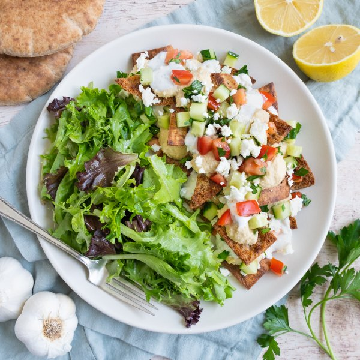

Pita "Nachos" with Fresh Veggies, Hummus, Garlic Yogurt, Feta & Salad

Prep Time
35 min
Nutrition (per serving)
685.9 kcalCalories
29.2 gProtein
80.7 gCarbs
30.9 gFat
Full nutrition table
| Calories | 685.9 kcal |
| Total fat | 30.9 g |
| Saturated fat | 7.6 g |
| Trans fat | 0.3 g |
| Cholesterol | 28.2 mg |
| Sodium | 869.6 mg |
| Carbohydrates | 80.7 g |
| Fiber | 16.5 g |
| Sugars | 9.8 g |
| Protein | 29.2 g |
| Potassium | 865.1 mg |
| Calcium | 370.9 mg |
| Iron | 6.4 mg |
| Vitamin A | 753.6 IU |
| Vitamin C | 44.6 mg |
| Vitamin D | 4.5 IU |
Cookware
Ingredients
- 1 (4 oz) pkgcrumbled feta cheese
- 1English cucumber
- 2 (15 oz) cansgarbanzo beans (chickpeas)
- 4 clovesgarlic
- 1 small bunchItalian (flat-leaf) parsley
- 2lemons
- 1 cupplain Greek yogurt
- 1 (5 oz) pkgspring mix (mixed greens)
- 2tomatoes
- 4whole grain pitas
- black pepper
- cumin, ground
- dill, dried
- extra virgin olive oil
- honey
- oregano, dried
- paprika
- red wine vinegar
- salt
- tahini
- thyme, dried
Steps
- Preheat oven to 425°F.
- Wash and dry the fresh produce. (Skip the mixed greens if they came pre-washed.)2 lemons
2 tomatoes
1 English cucumber
1 small bunch Italian (flat-leaf) parsley
1 (5 oz) pkg spring mix (mixed greens) - Place pita breads on a cutting board. Holding a knife parallel to the board, cut each pita in half horizontally to separate the two sides; cut or tear the bread into 2-inch pieces and place on a large baking sheet pan.4 whole grain pitas
- Zest lemons into a small bowl (set lemons aside for later use). Add oil and spices to the bowl; stir to combine the herb oil.3 tbsp extra virgin olive oil
½ tsp salt
½ tsp oregano, dried
½ tsp thyme, dried - Spoon herb oil over the pita, toss with your hands to coat, then spread out in an even layer. Place in the oven (it doesn't have to be fully heated) and bake, flipping halfway through, until the pita chips are crisp, 6-8 minutes. Remove from the oven. (Reserve bowl for next step.)
- Meanwhile, peel and mince garlic. Place in the reserved bowl along with yogurt, water, vinegar, and spices; whisk to combine the garlic yogurt and set aside.2 cloves garlic
1 cup plain Greek yogurt
2 tbsp water
2 tsp red wine vinegar
½ tsp dill, dried
¼ tsp salt
¼ tsp black pepper - Peel additional garlic and place in a blender.2 cloves garlic
- Juice one lemon into the blender with the garlic (reserve remaining lemon for the salad dressing).
- Drain and rinse chickpeas; add to the blender along with water, tahini, and spices. Blend on high until hummus is smooth; set aside.2 (15 oz) cans garbanzo beans (chickpeas)
½ cup water
2 tbsp tahini
½ tsp salt
¼ tsp cumin, ground
¼ tsp paprika - Trim and small dice cucumber; small dice tomatoes. Place both in a medium bowl.
- Shave parsley leaves off the stems; discard stems and mince the leaves. Add to the bowl with the cucumber and tomato; stir to combine the veggie topping and set aside.
- Juice remaining lemon into another medium bowl. Add oil, honey, and spices; whisk to combine the dressing. Add mixed greens and toss to combine the salad.4 tsp extra virgin olive oil
1 tsp honey
¼ tsp salt
¼ tsp black pepper
⅛ tsp oregano, dried - To assemble the "nachos," spoon hummus, garlic yogurt, and veggie topping over the pita chips. Sprinkle with feta.1 (4 oz) pkg crumbled feta cheese
- To serve, divide "nachos" and salad between plates. Enjoy!